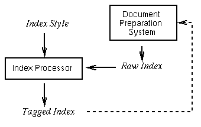
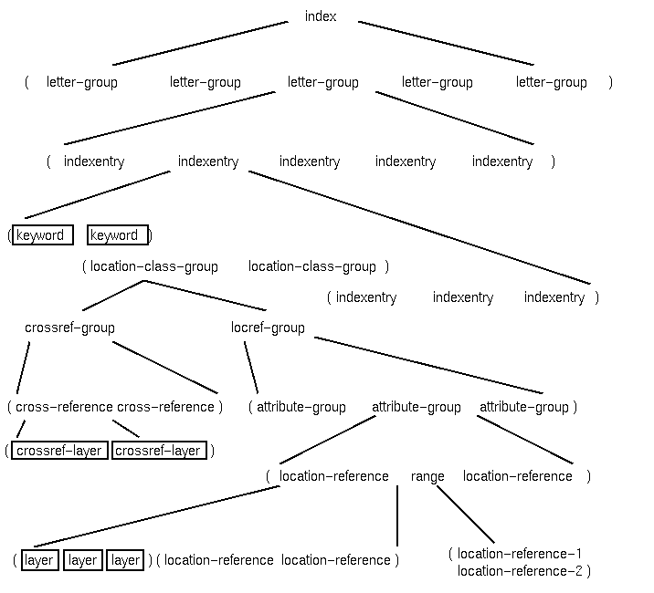

Usually document preparation systems produce some form data that
describe the index entries and the locations they point to.
This data is called the raw index since it consists of raw data
which contains structured information about the entries of the index.
The raw index is fed into the index processor and is processed
according to a specification called the index style. This is a
user-definable description how the index is to be processed, what
sort rules for the keywords should be used, which kind of locations
may appear, and finally, what tags should be emitted when writing the
index into the output file. The result is sometimes fed back into the
document preparation system, as it is in the case of TeX, or used
otherwise. The following figure illustrates this embedding into the
document preparation process.

The xindy system is oriented on book-like indexes in a form that
is described later in detail. The format of the input data is fixed
and a small tool that converts some system dependent raw index in a
form suitable for xindy should not be a big hurdle. The user is
normally not involved in the correct format suitable for xindy
and some tools will make this work invisible to him.
In contrast, the output of the xindy system is highly
configurable and can produce a variety of different markups.
Additionally, the way xindy processes the index data can be
parametrized and controlled in many ways and gives the user a powerful
framework for describing complex indexes. The user can tell xindy
how it should produce an output according to his wishes or simply use
some of the predefined styles that come with the distribution.
In the following sections we introduce some terms that are necessary
to understand the way xindy works.
The development of xindy started with the devlopment of a model
of a book-like index. This rather vague term will now be fleshed
out by giving a semi-formal description of the model. If the structure
of an index conforms to this model it can be processed by xindy.
We first present a diagram that describes the structure of a processed
index. It is a hierarchical recursive data structure which we will
describe now.

Boxed objects contain elements from the raw index such as the keywords
or the location reference layers. We start from the root of the
diagram and explain the different elements.
index
An index consists of a list of letter-groups.
letter-group
The letter groups serve as containers for
indexentries. The letter groups are intended to group all
index entries sharing a common keyword prefix, allowing the
assignment of a specific markup for each group. For example, indexes
are often organized in a way that new index entries beginning with a
new letter are separated by a specific markup. The following example
illustrates this style.
B
bread 25, 27
butter 26
M
marmalade 19
milk 21
Here we have two letter groups for the letters `B' and `M' because the
keywords `bread' and `butter' share the same prefix `b' and
`marmalade' and `milk' share the prefix `m'. xindy can be advised
to define arbitrary letter groups with a particular markup for each of
them. See command define-letter-group for further details.
indexentry
An index entry consists of three components: the
keyword and optionally the list of location-class-groups and
the sub-indexentries. An example:
bread 25-30
brown 26
white 27
This index entry consists of the keyword `bread', the
location class list `25-30' and the sub-entries `brown 26' and `white
27'. The sub-entries themselves are complete index entries as well,
forming a recursive data structure.
keyword
The keyword is the identifier of an index entry. It
consists of a list of strings being the key if the index entry. In
our model the keyword constists of a list of strings, since indexes
are often organized hierarchically with different layers. In the
example
bread 25-30
bread, brown 26
bread, white 27
we have keywords `bread', `bread, brown' and `bread, white'.
A keyword is actually separated into four different keys. The
main-key is the key that is specified from the author who indexes
a document. The merge-key is derived from the main key with the
so-called merge mapping. This mapping is accomplished with a set
of rewrite rules. The sort-key is derived from the merge key with
another set of rewrite rules called the sort mapping. The
print-key can be specified by the user explicitely or, if it is
ommited, equals the main key. The rewrite rules consist of string
substitutions that also include regular expression features.
The following figure describes this:
The merge-key is necessary to define the equality of
index entry keys. See command merge-rule for further details about
defining the merge mapping.
The sort-key is necessary to define a total order on the
keywords. Since we need a scheme that is independent from any specific
character set such as ASCII or ISO-Latin, we must be able to define
completely new alphabets. The index entries are then sorted according
to the ISO-Latin alphabet. See the command sort-rule for an
explanation how these mapping can be specified.
The print-key is used for the final markup and contains the
string that appears in the generated markup.
location-class-group
There exist two kinds of
location class groups namely location-reference-groups and
cross-reference-groups.
location-reference-group
consists of a list of
attribute-groups.
attribute-groups
Each location-reference-group consists of
a list of attribute-groups. Attribute groups are defined by a set
of attributes. In the markup phase, all location references are
sorted according to the group number their attributes belong to.
Additionally all location references of a particular attribute group
appear together in the index.
See command define-attribute-groups for further information about
the handling of attribute-groups.
An attribute group consists of a list of location-references
and/or ranges.
Each
index entry of an index references at least one location in the
document. A location is a logical or physical part of a document,
such as a single page, a section or subsection, etc. The symbolic name
of a location is called a location-reference. The
location reference is always represented as a string (a sequence of
characters). Each location reference is associated a special tag
called attribute. The following examples may give you an idea how
location references could look like.
"25" represents a page number.
"Chapter-3" represents the third chapter of a document.
"A-I" represents the first page, written in uppercase roman
numerals of the appendix `A', separated by a hyphen.
"2.3.4" represents the sub-sub-section 2.3.4 of a document.
As we can see, the location references are often composed
hierarchically of smaller entities, such as numbers or names. All
location references that belong to the same class form a
location-class. A location class is composed of alphabets
and separators. See command define-location-class for a
description how classes can be defined.
alphabet, separator
As we have seen in the previous section,
location classes consist of alphabets and separators. xindy has the
following built-in set of basic alphabets:
<tag/<tt/arabic-numbers// contains all non-negative numbers beginning
with zero: 0, 1, 2, ....
<tag/<tt/roman-numerals-uppercase// the roman numerals I, II, III,
(IIII/IV), V, ... It recognizes the old and new roman numeral system.
<tag/<tt/roman-numerals-lowercase// the same for the lowercase roman
numerals.
<tag/<tt/ALPHA// the US-ASCII alphabet (uppercase letters).
<tag/<tt/alpha// the US-ASCII alphabet (lowercase letters).
<tag/<tt/digits// the digits 0, 1, 2, 3, 4, 5, 6, 7, 8 and 9 in this
order.
The user is free to define new alphabets as he wishes. See the
commands define-alphabet and define-enumeration for further
details.
A complete location class can be defined by composing alphabets and
separators. The location class of the example "A-I" can be
defined as follows
This is a list that completely describes all possible instances of
this location class. Other valid members are A-II, B-VI,
etc. Location classes are defined with the command
define-location-class.
xindy reads the incoming strings representing location references
and tries to match them against a previously defined location class.
There exist no predefined location classes.
range
A range is a pair of location-references. A
sequence of location references following one another is transformed
into an range if the length of the sequence exceeds a certain
user-definable limit. For example, the location references 11, 12, 13
and 14 may be transformed into the range 11--14. See command
define-location-class for further details.
cross-reference-group
Container for all
cross-references of a particular cross-reference-class.
cross-reference-class, cross-reference
A cross-reference is
an unstructured reference. Cross-reference-classes are used to
define different classes of cross references. All elements of a
cross reference class appear together in the index. A cross reference
consists of a list of strings.
attributes
Each location reference contains a so-called
attribute. Attributes may be used to give a location reference a
different meaning that may influence the processing and markup of this
reference. Sometimes location references pointing to semantically
different locations such as a definition or a usage of a term are
tagged differently. They often appear in italics or boldface
indicating this difference. An attribute may now be used to express
this difference. Since xindy needs to know the possible
attributes before the index entries are read in, the command
define-attributes must be used to define a set of attributes and
how they interact.